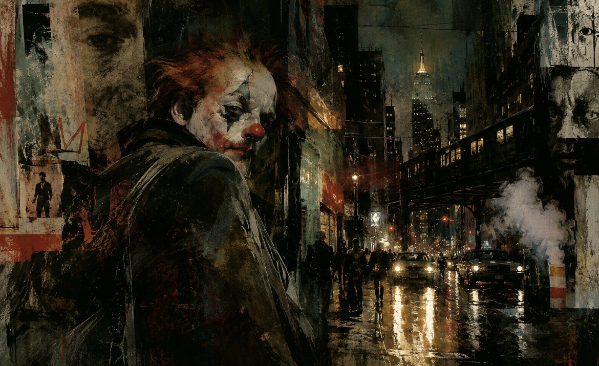

Ideas yet to come · Comic concept
Wavy Gravy
A clown. A daughter to protect. A detective losing his grip.

Every city needs a villain.
Or does it?
On the rain-soaked streets of New York, Wavy Gravy robs Wall Street’s wealthy to support his daughter. As a detective’s obsession spirals, the supposed villain may be the only one left with a moral code.
A planned 24-page comic · Coming Christmas 2026
← Back to the collection